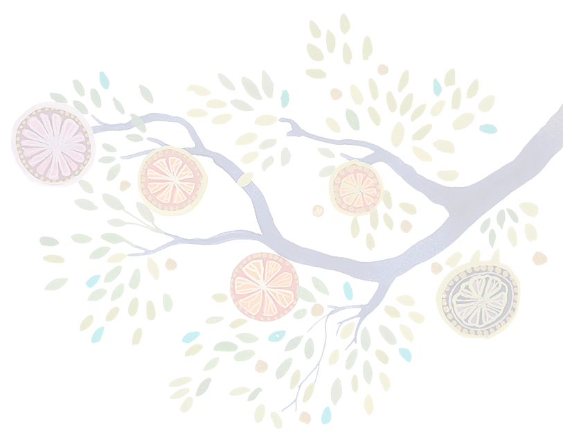

- Home
- Luogo evento
- Trasporto
- Alloggio
- Altre informazioni
ESP
ITA
CAT
ENG
Barcelona, 8 Ottobre 2016
HOME | LUOGO EVENTO | TRASPORTO | ALLOGGIO | ALTRE INFORMAZIONI
Vi aspettiamo per festeggiare il nostro matrimonio con voi. Le celebrazioni inizieranno con una cerimonia alle 17, seguita dall'aperitivo, la cena e la festa!
Controllate le altre pagine per informazioni utili.
E se non avete ancora confermato, per favore fateci sapere se sarete presenti scrivendoci un'email a rsvp@ruthandstefano.net
HOME | LUOGO EVENTO | TRASPORTO | ALLOGGIO | ALTRE INFORMAZIONI
Tutti i festeggiamenti avranno luogo presso la Antica Biblioteca Almirall, sul monte Tibidabo, alle spalle di Barcellona.
La Biblioteca e' un edificio modernista, costruito al principio del XX secolo. E' dedicata alla memoria di Valentí Almirall, intellettuale e politico catalano della seconda metá del XIX secolo.
HOME | LUOGO EVENTO | TRASPORTO | ALLOGGIO | ALTRE INFORMAZIONI
Per facilitare l'accesso al luogo della cerimonia, organizzeremo il trasporto dal centro cittá (verso le 16) e dalla Biblioteca (alle 2 del mattino).
Il punto di partenza e ritorno sara' come indicato nella mappa.
Per favore controllate questo pagina nei giorni precedenti alla cerimonia per ulteriori informazioni.
HOME | LUOGO EVENTO | TRASPORTO | ALLOGGIO | ALTRE INFORMAZIONI
Barcellona non è una città molto grande. Ogni alloggio in una zona centrale vi permetterá di essere situati perfettamente sia per visitare la cittá che per raggiungere il luogo dei festeggiamenti.
Tra le aree da considerare senza dubbio ci sono Grácia, Eixample, Gotic e Born. Altre zone possibili sono Poble Sec (vicino a Plaça d'Espanya), Poble Nou e la Barceloneta.
Qui sotto troverete una lista di possibili hotel da considerare, ma non è esauriente. Barcellona è ricca di hotel (e appartamenti) e potreste trovare qualcosa che vi piace di più.
Hotel da considerare:
- Cotton House Hotel
- Hotel Ohla
- Chic & Basic Born
- Hotel 1898
- HCC Opera Garden
- HCC Taber
- HCC Urquinaona Plaza
- H10 Metropolitan
HOME | LUOGO EVENTO | TRASPORTO | ALLOGGIO | ALTRE INFORMAZIONI
Aggiungeremo altre informazioni utili su questa pagina.
Per favore controllate questo pagina nei giorni precedenti alla cerimonia per ulteriori informazioni.
RSVP entro il 31 Agosto
